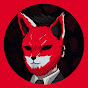
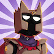
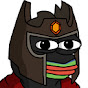

Robleis
Tomás Arbillaga
Nació en Olavarría, Buenos Aires (provincia), el 1 de octubre de 1998, siendo el hermano mediano (segundo hermano) de la familia Arbillaga (Su hermano mayor es RUSHLAI y su hermano menor es ThiagoIUTU). Tomas comenzó su pasión en los videojuegos por lo menos a los 3 años tras gracias al famoso videojuego "Duck Hunt" de "Family Computer", y tuvo un comportamiento no muy loco el cual tenia las mismas personalidades que su hermano mayor.
canales

Agusbob
Agustin Boetto
Un stremer que empezo en la casa de sus padres el cual fue bastante reconocido por participar en el parkour del rubius de fortnite que casi queda clasificado por 4 segundos de diferencia contra mrkeroro. nacido en argentina 27 de abril
tiempo de agusbob tiempo de keroroConocido por jugar al GTA rolplay o el que trajo la timba virtual para argentina en la escena de twitch
Canales

farfadox
Franco
conocido popularmente como Farfadox, es un humorista de origen argentino, nacido en San Carlos de Bariloche el cual se dedica a subir gameplays variados y vlogs, cuenta con más de 2 millones de suscriptores.
nacido en argentina san Carlos Bariloche 23 de octubre de 1998
canales
 
spreen
Iván Raúl Buhajeruk
mejor conocido como SpreenDMC, o simplemente Spreen, es un youtuber argentino que sube gameplays de Minecraft y contenido muy variado.
Iván nació el 11 de octubre del 2000 en Santo Tomé, en la provincia de Santa Fe. A la edad de 12 años comenzó a subir videos en YouTube, principalmente de exponiendo hackers en Minecraft. De grande, había elegido estudiar la carrera universitaria de diseño industrial, pero por el tema de videos, decidió dejarla para tener más tiempo sobre sus videos y streams.